2 What is autocorrelation?
library(tidyverse)2.1 Simple correlation
- A variable y is correlated with a variable x and its slope is \(\beta_1\)
- In likelihood methods, this statement can be written as:
\[ y_i \sim N(\beta_0 + \beta_1 x_i, \sigma) \\ \]
- or
\[ y_i = \beta_0 + \beta_1 x_i +\epsilon_i \\ \epsilon_i \sim N(0, \sigma) \]
We have three parameters \(\beta_0, \beta_1, \sigma\) in this simple linear model.
set.seed(1234)
N <- 50
beta0 <- 2
beta1 <- 0.8
sigma <- 0.3
x <- rnorm(N, 0, 1)
y <- rnorm(N, beta0 + beta1 * x, sigma)
dat <- tibble(x, y, n = seq(1, N))
ggplot(dat, aes(x = x , y = y)) +
geom_point()
dat %>%
gather(xy, val, 1:2) %>%
ggplot(., aes(x = n , y = val, col = xy)) +
geom_point() +
geom_line()
cor.test(x, y)
#>
#> Pearson's product-moment correlation
#>
#> data: x and y
#> t = 15, df = 48, p-value <2e-16
#> alternative hypothesis: true correlation is not equal to 0
#> 95 percent confidence interval:
#> 0.849 0.949
#> sample estimates:
#> cor
#> 0.912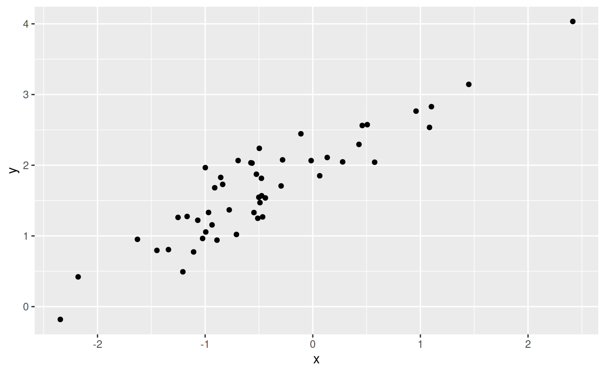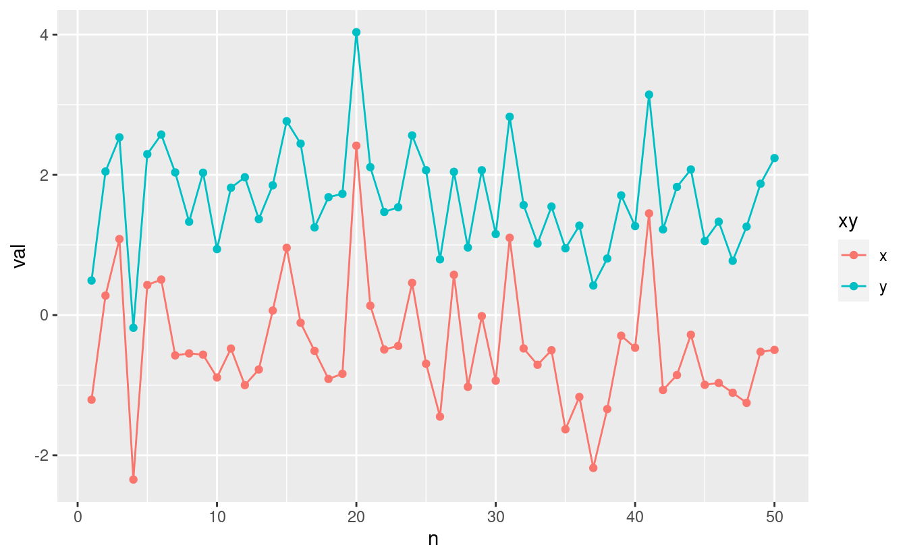
2.2 One dimensional autocorrelation
- Previous observation(s) affects the current observation.
- Temporal autocorrelation is this type of the autocorrelation.
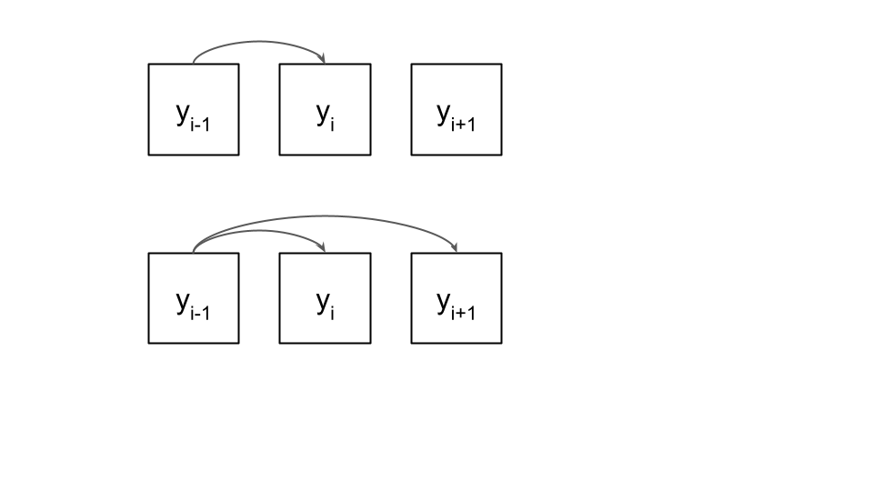
moge
\[ x_i = \mu_x +\epsilon_{xi} \\ y_i = \mu_y +\epsilon_{yi} \\ \epsilon_{y,i+1} \sim N(\epsilon_{y,i}, \phi_y) \\ \epsilon_{x,i+1} \sim N(\epsilon_{x,i}, \phi_x) \]
N <- 50
x <- y <- NULL
x[1] <- 0
y[1] <- 0
for (i in 1:(N-1)) {
y[i + 1] <- rnorm(1, y[i], 0.8)
x[i + 1] <- rnorm(1, x[i], 0.8)
}
dat <- tibble(x, y, n = seq(1, N))
ggplot(dat, aes(x = x , y = y)) +
geom_point()
dat %>%
gather(xy, val, 1:2) %>%
ggplot(., aes(x = n , y = val, col = xy)) +
geom_point() +
geom_line()
cor.test(x, y)
#>
#> Pearson's product-moment correlation
#>
#> data: x and y
#> t = 2, df = 48, p-value = 0.05
#> alternative hypothesis: true correlation is not equal to 0
#> 95 percent confidence interval:
#> 0.00538 0.52060
#> sample estimates:
#> cor
#> 0.283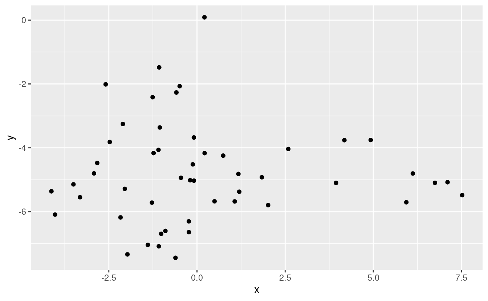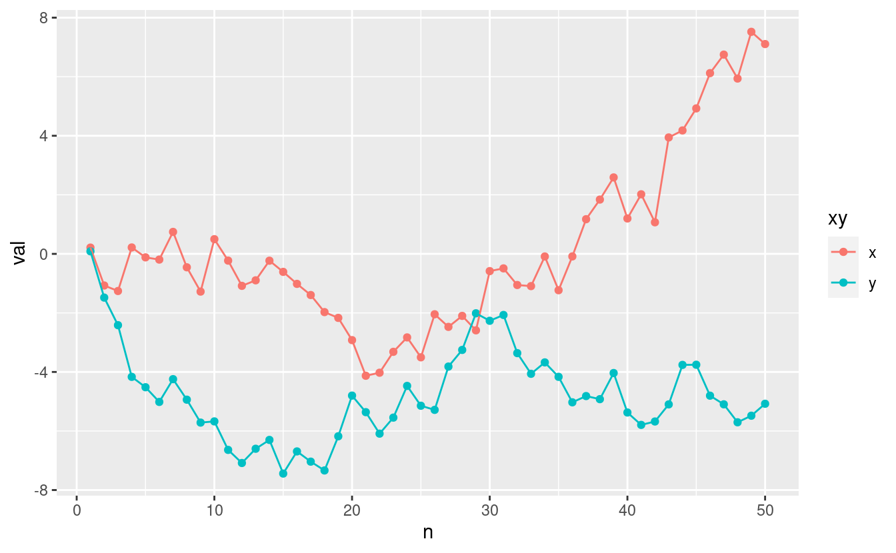
- We got a strong correlation for the two variables that are supposed to be independent.
N <- 50
r <- NULL
for (j in 1:200) {
x <- y <- NULL
x[1] <- 0
y[1] <- 0
for (i in 1:(N-1)) {
y[i + 1] <- rnorm(1, y[i], 0.8)
x[i + 1] <- rnorm(1, x[i], 0.8)
}
r[j] <- cor(x, y)
}
qplot(r)
#> `stat_bin()` using `bins = 30`. Pick better value with `binwidth`.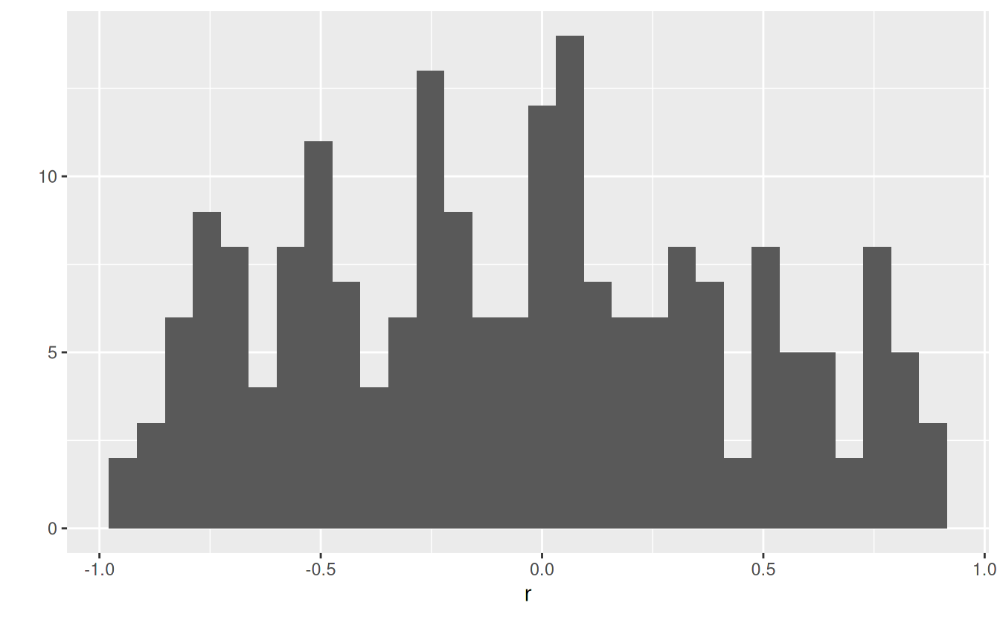
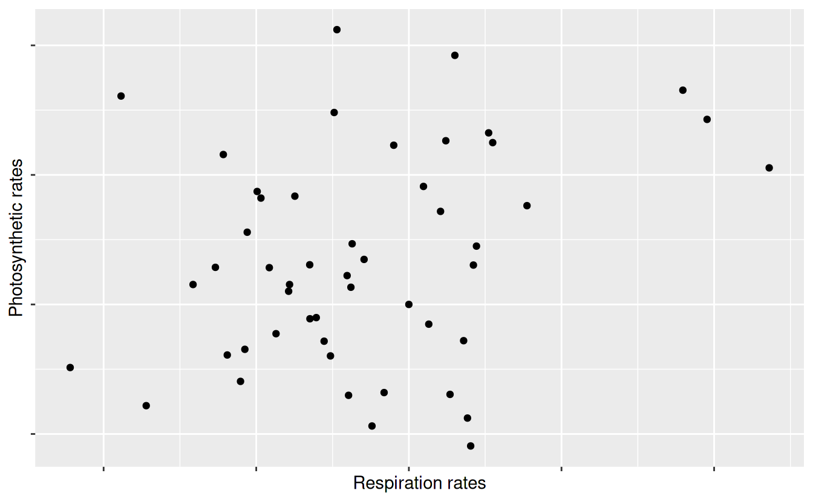
- Each point shows daily measurements
- Do you believe this?
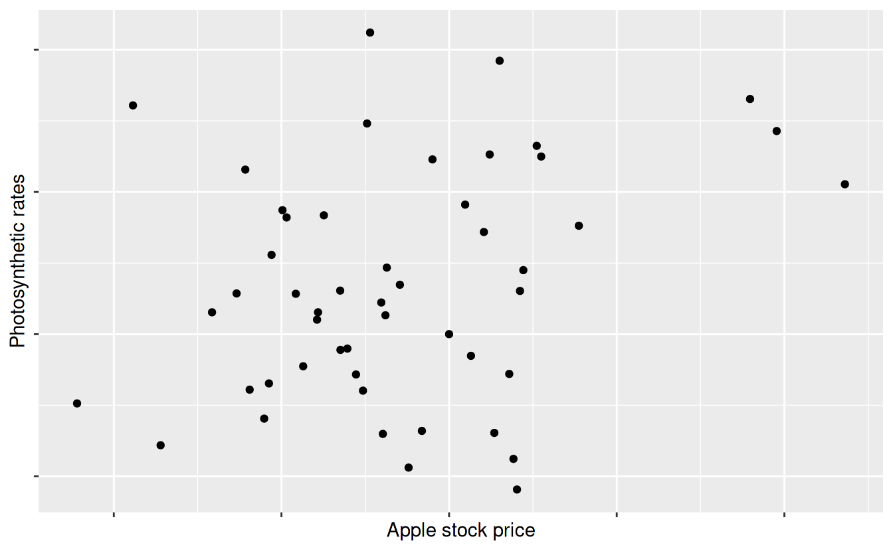
- Do you believe this?
2.3 Two dimensional autocorrelation
- Neighbors affect the current observation.
- Spatial autocorrelation is this type of the autocorrelation.

2D
\[ Y = X \beta + \rho W (Y - X \beta) + \epsilon \]
library(spdep)
#> Loading required package: sp
#> Loading required package: spData
#> Warning: multiple methods tables found for 'wkt'
#> To access larger datasets in this package, install the spDataLarge
#> package with: `install.packages('spDataLarge',
#> repos='https://nowosad.github.io/drat/', type='source')`
#> Loading required package: sf
#> Linking to GEOS 3.8.0, GDAL 3.0.4, PROJ 6.3.2
library(Matrix)
#>
#> Attaching package: 'Matrix'
#> The following objects are masked from 'package:tidyr':
#>
#> expand, pack, unpack
set.seed(1234)
N <- 50
x <- seq(1, 25)
y <- seq(1, 25)
nb <- cell2nb(length(x),length(y), type = "queen")
W <- nb2listw(nb, zero.policy = TRUE, style = "W")
B <- nb2mat(nb, zero.policy = TRUE, style = "W")
#z <- matrix(numeric(length(x) * length(y)), ncol = length(y))
z <- matrix(rnorm(length(x) * length(y)), ncol = length(y))
automean2<-function(metric){
#queen?equal weighting 1/8
d.W<-nb2listw(d.nb, zero.policy=TRUE,style="W")
#SAR
a<-spautolm(metric~ 1,listw=d.W,na.action=na.omit)
return(a$fit$fitted.values)
}
z0 <- z
z2 <- z
for (i in 2:(length(x)-1)) {
for (j in 2:(length(y)-1)) {
z[i, j] <-
rnorm(1,
mean(
c(z[i - 1, j - 1],
z[i - 1, j],
z[i - 1, j + 1],
z[i, j - 1],
z[i, j + 1],
z[i + 1, j - 1],
z[i + 1, j],
z[i + 1, j + 1])),
0)
}
}
z_scaled <- (z - mean(as.numeric(z))) / sd(as.numeric(z))
z2 <- z
z2[z > 0] <- "ridge"
z2[z < 0] <- "valley"
#z2[z > -0.5 & z < 0.5] <- "flat"
#z2 <- z2 + z
x2 <- rep(x, length(y))
y2 <- rep(y, each = length(x))
dat <- tibble(x = x2,
y = y2,
mu = as.vector(z),
hab = as.vector(z2),
z = as.numeric(z_scaled),
z0 = as.numeric(z0)
)
ggplot(dat, aes(x = x, y = y, fill = z0)) +
geom_raster()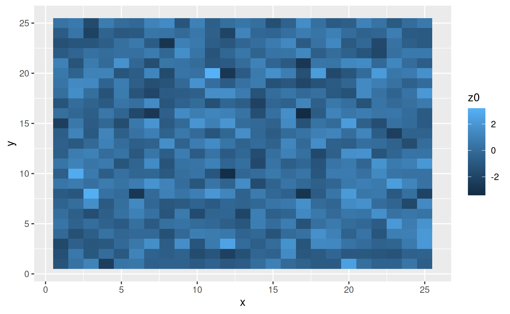
dat %>%
# cut the edges
filter(x > 1) %>%
filter(x < max(x)) %>%
filter(y > 1) %>%
filter(y < max(y)) %>%
ggplot(., aes(x = x, y = y, fill = z)) +
geom_raster()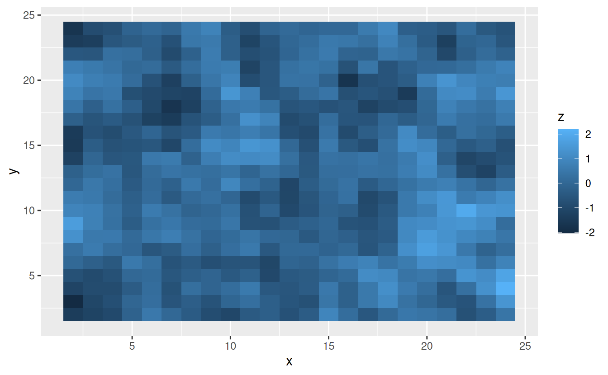
ggplot(dat, aes(x = x, y = y, fill = hab)) +
geom_raster()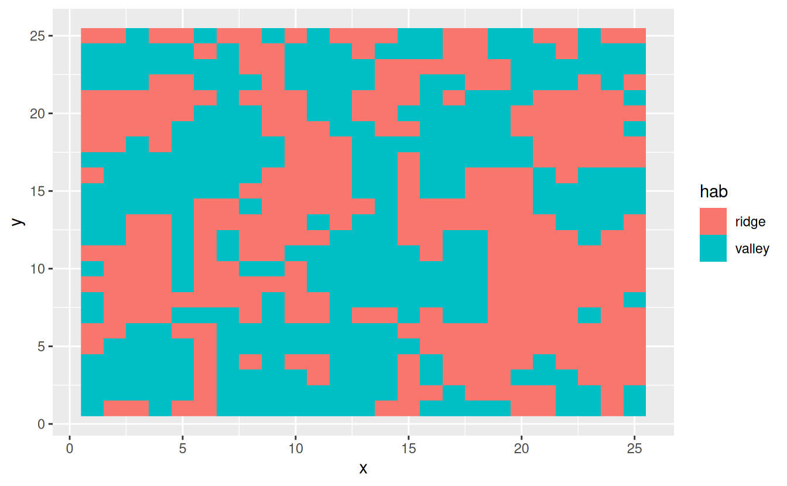
ggplot(dat, aes(x = x, y = y, z = mu)) +
geom_contour()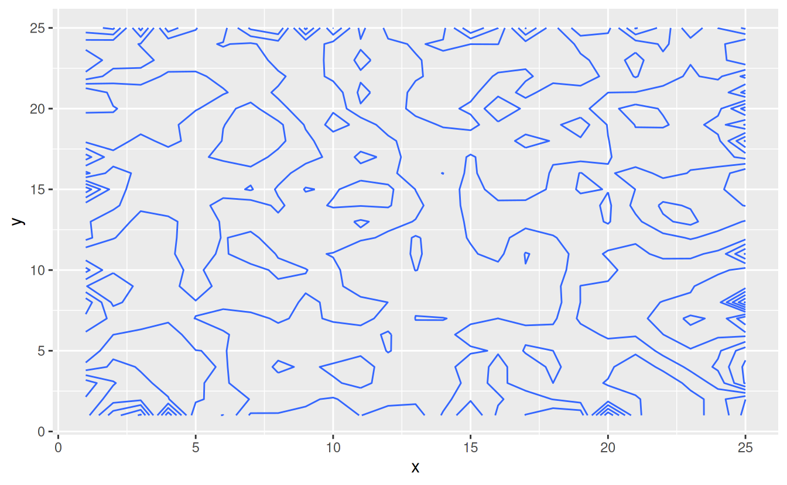
tmp <- rmvnorm(100, c(0, 0), diag(2)) %>%
rbind(., rmvnorm(100, c(2, 4), diag(2))) %>%
as_tibble
moge <- expand.grid(seq(3,-3, length = 100), seq(3,-3, length = 100))
moge %>%
mutate(p = dmvnorm(moge, c(0, 0), diag(2))) %>%
ggplot(., aes(x = Var1, y = Var2, z = p)) +
geom_contour()
m <- ggplot(tmp, aes(x = V1, y = V2)) +
geom_point()
# contour lines
m + geom_density_2d()dat2 <- dat %>%
# mutate(hab_dummy = ifelse(hab == "valley", 0, 1)) %>%
mutate(trait = rnorm(nrow(.), mu, 0.3)) # based on z
dat2 %>%
ggplot(., aes(x = hab, y = trait, col = hab)) +
geom_violin() +
geom_jitter(width = 0.2)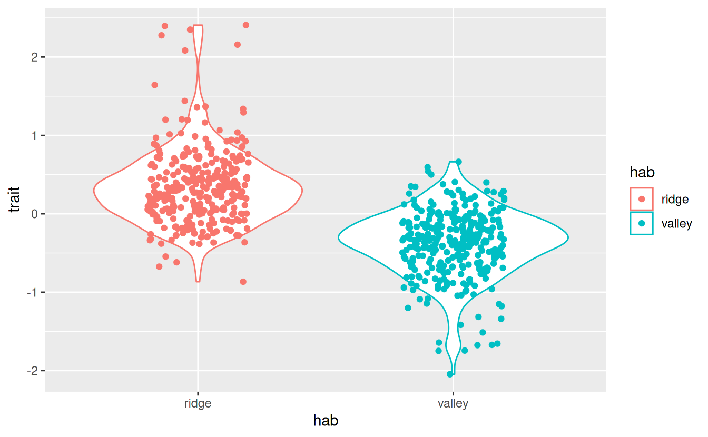
- Ridge sites have greater trait values (e.g., thick dense leaves to grow well in dry conditions)
- Is this because those traits are favored in ridge sites?
- Is this just because neighbors have similar trait values (spatial autocorrelation)?